在 iOS 13 及之后的版本中，人们可以选择使用一种全局深色的外观，它就是深色模式（Dark Mode）。在深色模式中，系统对于所有的界面、菜单、控件都使用了深色色盘，也使用了更多的虚化效果（vibrancy）以使得与更暗的背景内容相比，前景内容能够更加显眼明亮。深色模式支持所有的辅助功能。
人们可以选择使用深色模式作为系统的默认界面样式，他们可以通过设置使设备在周围的灯光变暗时自动转换到深色模式。
- 将焦点放在内容上：深色模式会把焦点放在你界面的内容区域，以让内容能够显眼，而周围的 UI 能够沉浸到背景中去。
- 在浅色模式和深色模式下都测试你的设计：观察你的 app 的界面在两种模式下是什么样子，根据需要调整设计。在一个模式下表现良好的设计在另一个模式下可能就会有问题。
- 当你调整对比度和透明度等辅助功能设置使，确保你 app 的内容可以在深色模式下保持舒服的可读性：在深色模式下，你应该测试在开启增强对比度和降低透明度功能时 app 的内容，包括单独开启时的测试和都开启时的测试。你可能会发现在一些深色背景上，深色的文本可读性会比较低。你也可能发现在深色模式下打开增强对比度会导致深色文本和深色背景之间的对比度。虽然具备正常视力的人们仍然能够阅读低对比度的文本，但这样的文本可能对于视力有损伤的人们就是不可读的。
目录
颜色
在深色模式的色盘中包括了更深的背景颜色和更浅的前景颜色，他们都经过了仔细的筛选，在保持两个模式下的一致性的前提下，也确保了良好的对比度。
- 使用适配当前外观的颜色：语义化颜色，像是「背景颜色」，可以自动适配当前的外观。当你需要一个自定义颜色时，添加一个颜色集合（Color Set）资源到你 app 的资源目录中，指定浅色和深色模式下的颜色变种，这样就可以适配当前的外观模式。避免使用硬编码的颜色值或者不能适配的颜色。
- 在所有的外观下确保充足的颜色对比度：使用系统定义的颜色确保前景和背景内容间有合适的对比度比值。对于自定义颜色，以达到 7:1 的对比度比值为目标，特别是对于小的文本。
- 软化白色背景的颜色：如果你必须在深色模式中对于内容使用白色背景，选择一个稍微深一点的白色，以避免背景会打亮周围的深色内容。
系统颜色
iOS 根据深色模式或者浅色模式定义了以下系统颜色，这些颜色值可能随着不断的版本迭代发生变化，所以使用系统 API 去调用这些系统颜色。
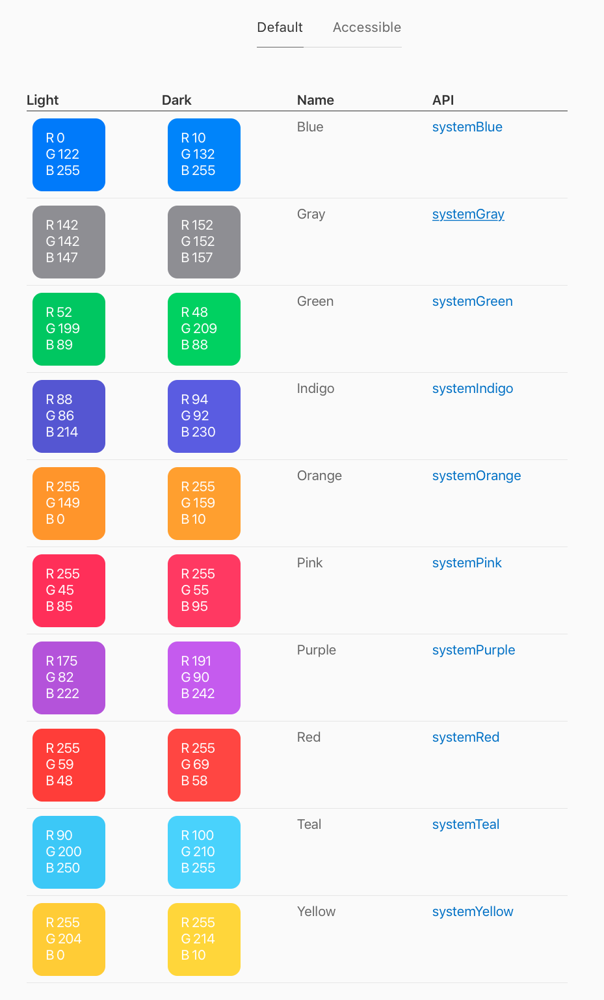
为增强可读性，系统颜色还有下面这些变种：
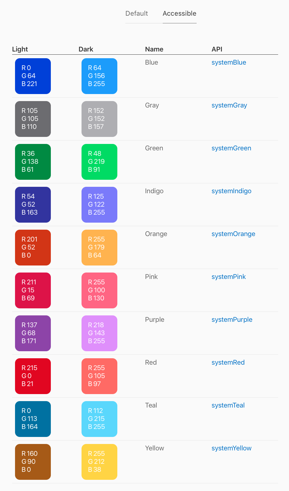
iOS 13 还引入了六种不透明的灰色值，虽然会用到的地方很少，但可以方便你在半透明效果不好的地方使用。比如在元素相交或者重叠时，像是网格中的线或者 bar，这些地方使用不透明的颜色更好。通常情况下还是应该使用系统颜色。
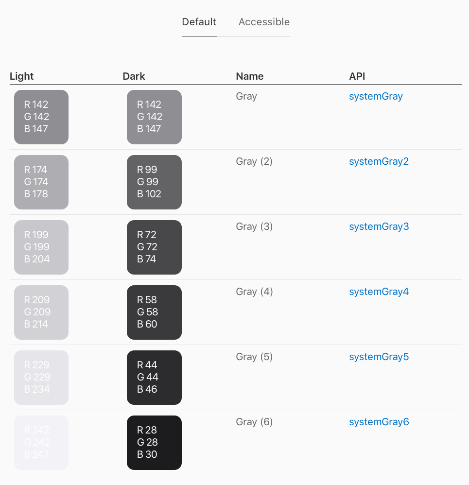
同样地，为增强可读性，有下列变种：
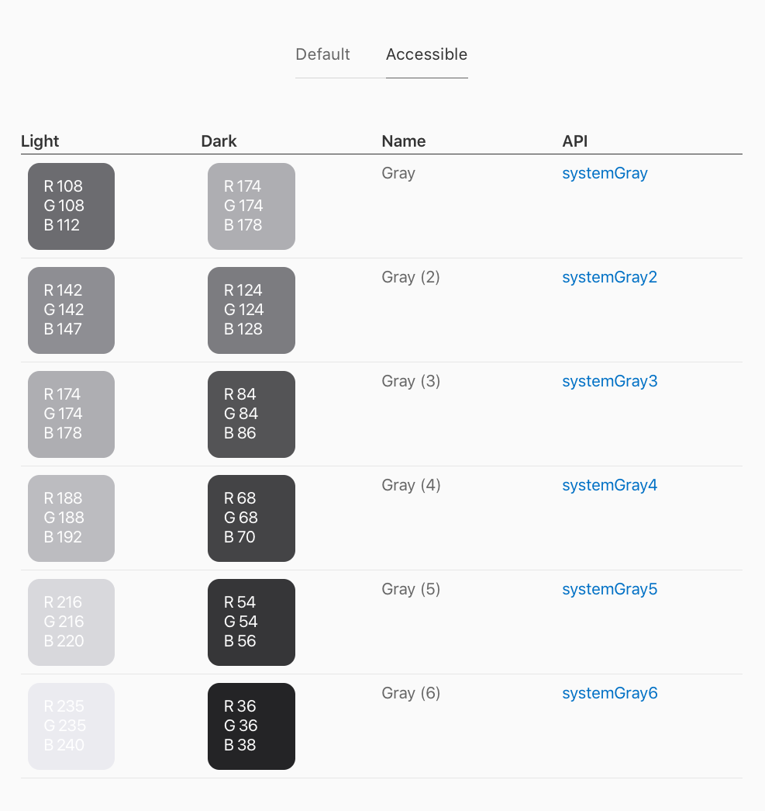
动态系统颜色
除了描边颜色，iOS 也根据语义对背景区域和前景内容提供了定义好的系统颜色，比如文本标签、分隔线、填充。这些颜色可以自动适配深色模式和浅色模式。
iOS 定义了两个系列的背景颜色：一个系列是「系统背景颜色」，另一个系列是「成组背景颜色」。每一个系列都包含了四个等级的变种以帮助传达信息的层级。通常情况下，在成组的 table view 上使用「成组背景颜色」，否则就使用「系统背景颜色」。
使用这两个系列的背景颜色，你可以通过下面这些方式使用不同的等级变种表现层级：
- 在总体视图使用一级；
- 在位于总体视图上的成组的内容和元素上使用二级；
- 在位于二级元素上的成组的内容和元素上使用三级。
对于前景内容，iOS 系统定义了下面这些颜色：
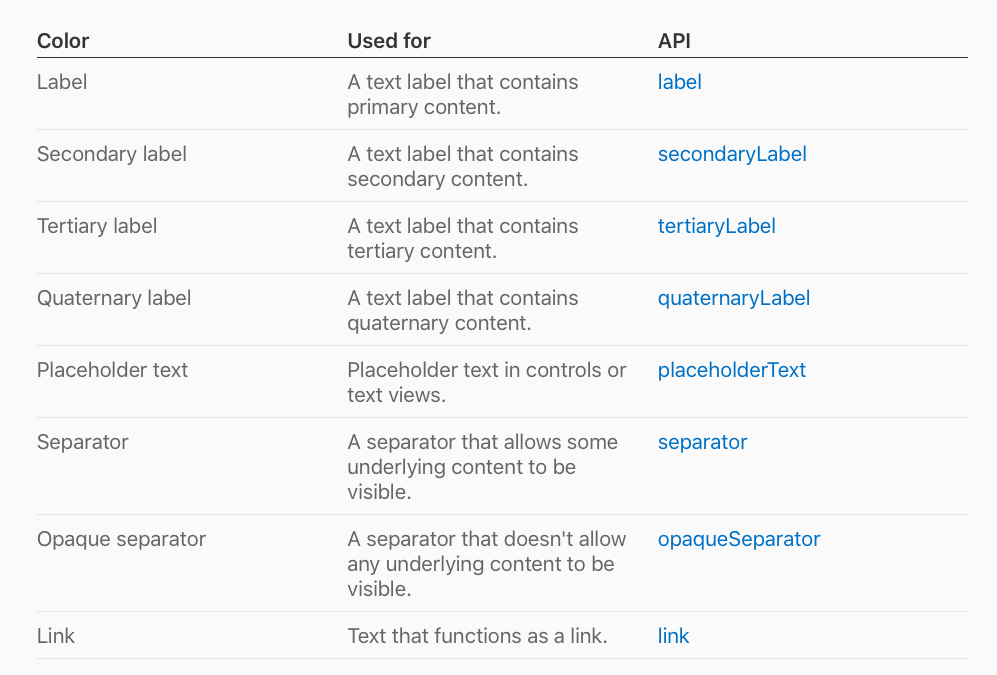
- 不要重新定义动态系统颜色的语义化定义：为了给人们创造一致化的体验，确保你的 app 的界面在不同的情景下都表现得没问题，应该倾向于使用动态系统颜色。
- 不要尝试复制动态系统颜色：动态系统颜色可能基于不同的环境变量，随着版本的迭代发生波动。使用动态系统颜色去搭配系统颜色，而是创造自定义颜色去搭配系统颜色。
图片、图标、标志颜色
iOS 13 的系统使用了 SF Symbols，它可以在深色模式下保持美观。系统也使用了经过对浅色模式和深色模式都优化了的全颜色图片。
- 在任何可能的地方使用 SF Symbols：使用了 SF Symbols 后，当你使用了动态颜色去给标志着色或者是增加了一层虚化效果时，标志都可以在两种模式下保持美观。
- 必要时，为浅色和深色模式分别设计独立的图形元素：在浅色模式中，图形使用中空的描边，而在深色模式中，图形使用实心填充的形状样式可能会更好。
- 确保全颜色的图片和图标显示没问题：如果在两种模式下看起来都不错，那就可以使用相同的资源。如果一个资源只在某个模式中显示没问题，那就修改资源或者为两种模式创建分别的资源。使用资源目录把两个资源组合成一个，命名成一张图片。
文本颜色
虚化效果可以使得深色背景上的文本保持良好的对比度。
- 对于文本使用系统提供的文本颜色：系统提供的一级、二级、三级、四级文本颜色可以自动适配浅色和深色模式。
- 使用系统视图绘制文本输入框和文本视图：系统视图和控件可以使你 app 的文本在所有的背景下看起来都没问题，并且可以根据虚化效果的有无自动调整适配。当你可以使用系统提供的视图去展示文本时就不要自己单独绘制文本视图。
材料
iOS 提供了材料效果（materials，也可叫 blur effects）以通过一种半透明的效果在 app 中创造深度的感觉。材料效果可以让视图和控件既暗示了背景上的内容，又不分散前景内容的注意力。为了制造这种效果，材料允许背景颜色信息穿过前景的视图，同时也会模糊背景的情景以保持可读性。
当你使用系统定义的材料效果时，你的 app 的元素会在各个情景中看起来都很好，因为这些效果可以自动适配系统的浅色模式和深色模式。
- 以系统使用的材料效果为指导：在任何可能的时候，比较具备相似功能的你的 app 的自定义视图和系统提供的视图，对其使用相同的材料效果。
- 利用好系统提供的文本、填充、图形、分隔线颜色：系统提供的颜色可以让这些元素在半透明的背景上看起来不错。
- 在任何可能的时候，使用 SF Symbols：当你使用动态系统颜色去给一个标志着色或者应用一个虚化效果时，标志可以在任何情景中都看起来不错。与之相对比，全颜色的图片可能不能与背景形成足够的对比度，在用在一个半透明背景的视图上时也可能不合时宜。
系统定义的材料和虚化效果
iOS 定义了你可以在指定的区域使用的多种材料，以控制前景内容和背景的视觉分隔。系统提供的材料包括浅色和深色两种变种，可以很好地匹配大多数背景。
为了让材料用在内容容器中，iOS 13 定义了四种不同透明度的材料：
- SystemUltraThinMaterial
- SystemThinMaterial
- SystemMaterial （默认）
- SystemThickMaterial
注意以下几点：
- 在选择材料时考虑对比度和视觉分隔：在选择使用哪种材料与虚化效果组合时，没有绝对的规则。在做出选择时考虑下面这些方面：
- 更厚的材料可以在文本和其他元素间提供更好的对比度；
- 通过在背景中提供一个内容的可见提醒，不透明度可以帮助人们记住当前的场景。
iOS 13 也为文本、填充、分隔定义了虚化值，可以与每一种材料匹配良好。通过从背景颜色中抽样、修改饱和度，虚化使 UI 元素更亮或更暗。虚化的 UI 元素可以与材料融合得更好，并增强半透明效果。
文本和填充都提供了几种等级的虚化效果，分隔线只有一个等级。等级的名字表明了元素和背景间的相对对比度，默认层级有着最高的对比度，第四等级有最低的对比度。
除了第四等级，你可以在任何材料上对文本使用下面的虚化效果值。不推荐在薄和超薄材料上使用第四等级，因为对比度太低。
- label（默认）
- secondaryLabel
- tertiaryLabel
- quaternaryLabel
你可以在任何材料上对填充使用下面的虚化效果值：
- fill（默认）
- secondaryFill
- tertiaryFill
iOS 为分隔线定义了一个默认的虚化效果值，它可以与任何材料上都匹配地很好。
- 基于语义化含义选择虚化效果：避免混用这些效果，例如，不要给分隔符使用文本的虚化效果。
在 iOS 上实现 Dark Mode
- 使用 iOS 13 SDK 以实现对深色模式的支持；
- 在系统提供的功能之外，自定义 app 的外表。
颜色
在过去，每一个 UI 颜色都只有一个值，现在 UI 颜色变成了动态的。当你在一个视图上使用动态颜色作为背景颜色或者文本颜色时，UIKit 会自动地使用正确的值，当模式发生变化时，会自动更新，所以你只需要设置颜色一次就好了。
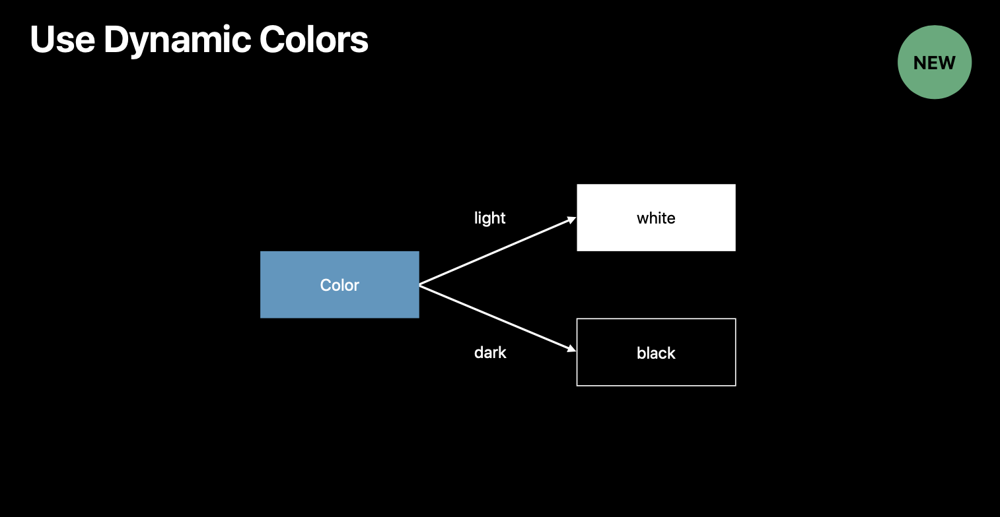
材料
在下面的例子中，背景中有一张图片，我想在上面添加一些模糊效果。首先创建一个 UIBlurEffect，并且指定样式为系统材料。然后创建一个 UIVisualEffectView ，并在这个 view 中使用前面创建好的样式。进一步确定这个 view 的尺寸和位置，把它放到背景图片上。
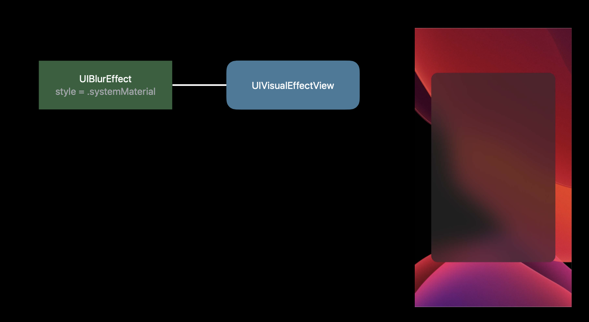
接下来可以在这个材料上添加一些虚化内容，虚化效果（vibrancy effect）可以让背景材料的一部分穿过。过去，这种效果只有一种样式，但现在有了多种样式：四种文本样式、三种填充区域样式、分隔线样式。我们创建一个 UIVibrancyEffect 并指定它的样式为「fill」，为了展示这个样式，我们创建另一个 UIVisualEffectView ，然后把它放进前面创建的 UIVisualEffectView 的「contenView」中。
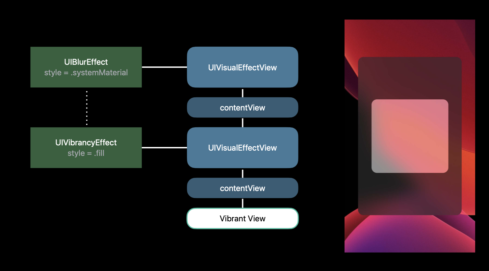
iOS 的深色模式如何工作？
颜色
动态颜色可以在不同模式间自动切换，那颜色是怎么知道它是浅色还是深色的呢？这是通过「trait collections」来实现的。每一个 view 和 view controller 都有一个 trait collection，它可以帮助决定 view 的外观。
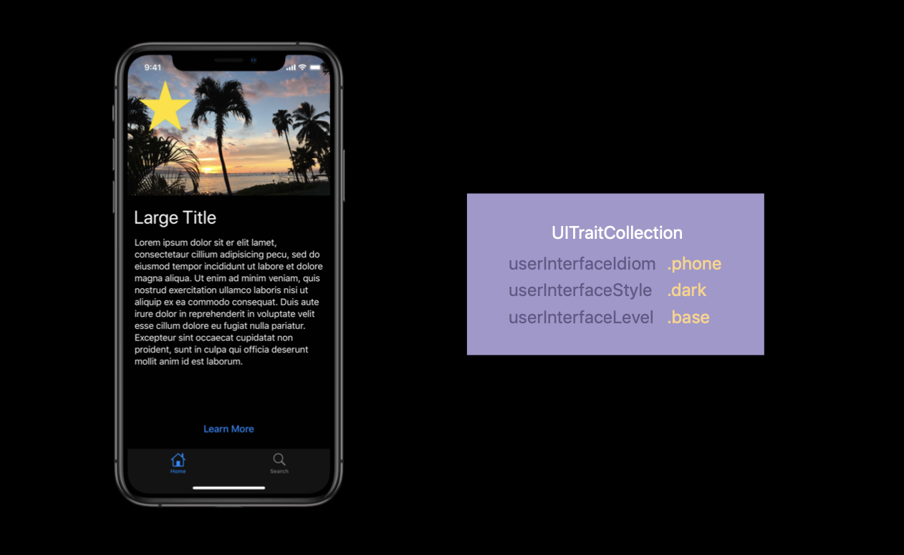
如果我们想解析某个特定的颜色，可以通过下面的代码实现：
let dynamicColor = UIColor.systemBackground
let traitCollection = view.traitCollection
let resolvedColor = dynamicColor.resolvedColor(with: traitCollection)
当然你也可以通过代码创建自定义的动态颜色，具体代码如下：
let dynamicColor = UIColor { (traitCollection: UITraitCollection) -> UIColor in if traitCollection.userInterfaceStyle == .dark {
return .black } else {
return .white }
}
动态颜色可以直接像其他颜色一样被直接调用，它是怎样自动解析的？如果有一个动态颜色，我请求他的 RGB 值，它就会返回一个结果。这是通过 「UITrait Collection」 的「current」属性来实现的。
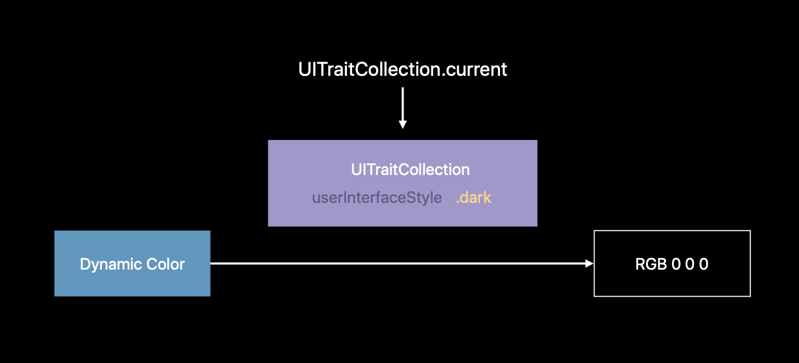
注意在 UIKit 之外，「current trait collection」不会有一个特定值，你需要自己去解析颜色。例如在像「CA Layer」、「CG Color」这种低等级的类就无法直接理解动态颜色。下面是示例代码：
let layer = CALayer()
let traitCollection = view.traitCollection
// Option 1
let resolvedColor = UIColor.label.resolvedColor(with: traitCollection)
layer.borderColor = resolvedColor.cgColor
当需要调用的颜色比较多时，可以使用下面这种代码写法：
let layer = CALayer()
let traitCollection = view.traitCollection
// Option 2
traitCollection.performAsCurrent {
layer.borderColor = UIColor.label.cgColor
}
还有第三种写法，注意 trait 会发生变化的情况：
let layer = CALayer()
let traitCollection = view.traitCollection
// Option 3
let savedTraitCollection = UITraitCollection.current
UITraitCollection.current = traitCollection
layer.borderColor = UIColor.label.cgColor
UITraitCollection.current = savedTraitCollection
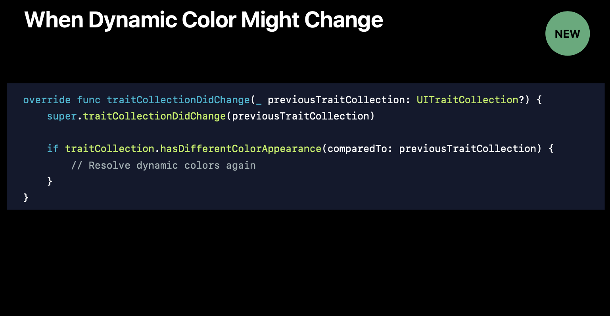
图片
UIImageView 和 UIColor 一样会根据当前的 trait collection 决定显示哪一张图片。
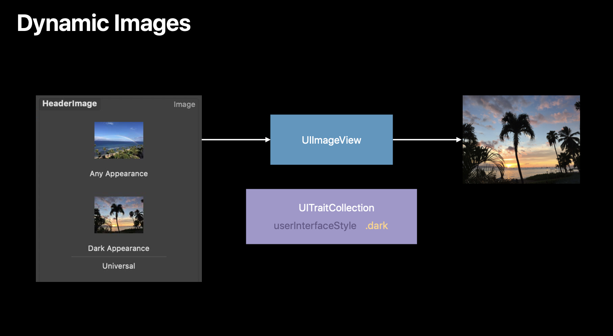
但 UIImage 不会关注当前的 trait collection。如果你想自己解析某张图片，你可以通过下面的代码实现：
let image = UIImage(named: “HeaderImage”)
let asset = image?.imageAsset
let resolvedImage = asset?.image(with: traitCollection)
Trait Collection
来总结一下 trait collection 是如何工作的？它在深色模式中扮演着核心的角色。记住最重要的一点，trait collection 在你的 app 中不止一个。
Trait collection 贯穿了你的整个 app，从屏幕的根层级一直到窗口屏幕。当模式发生变化时，贯穿整个 app 的 trait collection 都会发生变化。
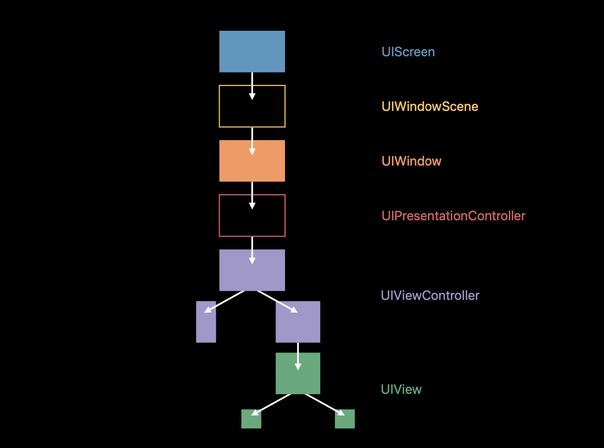
当 app 处于浅色模式时，你只想让 app 的某部分 UIView 或 UIViewController 处于深色模式，你可以通过下面的代码实现。
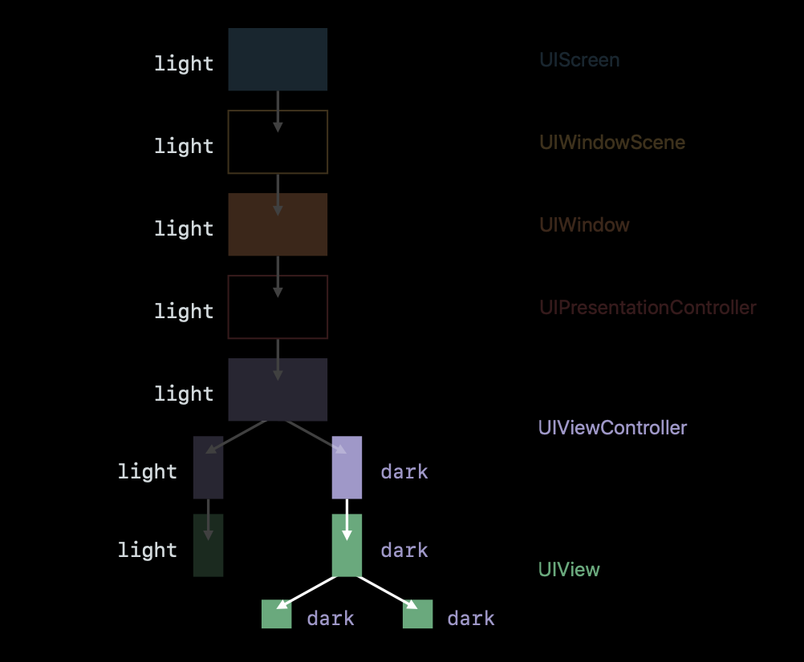
- UIViewController：
class UIViewController {
var overrideUserInterfaceStyle: UIUserInterfaceStyle
}
- UIView：
class UIView {
var overrideUserInterfaceStyle: UIUserInterfaceStyle
}
如果你想让整个 app 保持一种模式，你可以通过「Info.plist」的「UIUserInterfaceStyle 」去设置。
深色模式 API 更新
在 iOS 13 之前的版本中，有两种样式的状态栏：「default」和「lightContent」；而在 iOS 13 中「default」样式会根据系统外观自动变化。同样的，「UIScroll」视图的「indicator」样式也发生了同样的变化。
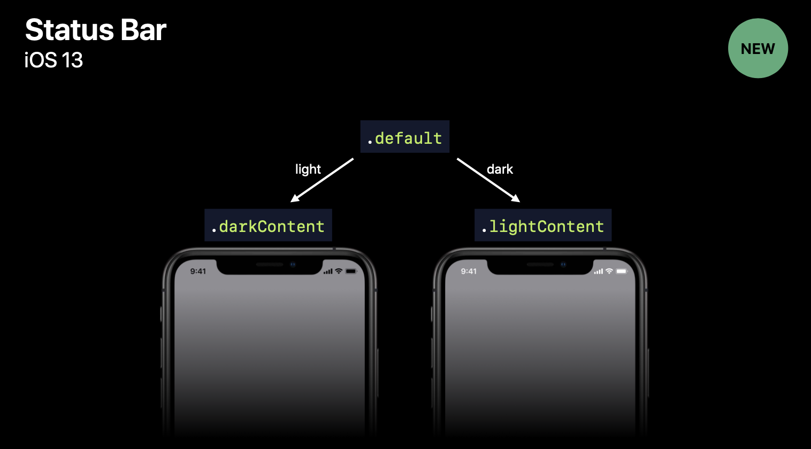
对于 「UIActivityIndicatorView」原有的几种样式都被废弃。现在它们根据尺寸分成两种样式，颜色默认是灰色，在两种模式下都可以显示的很好，当然你也可以自定义颜色。
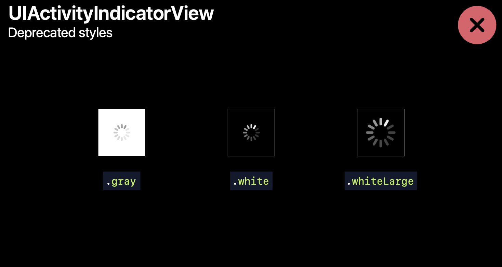
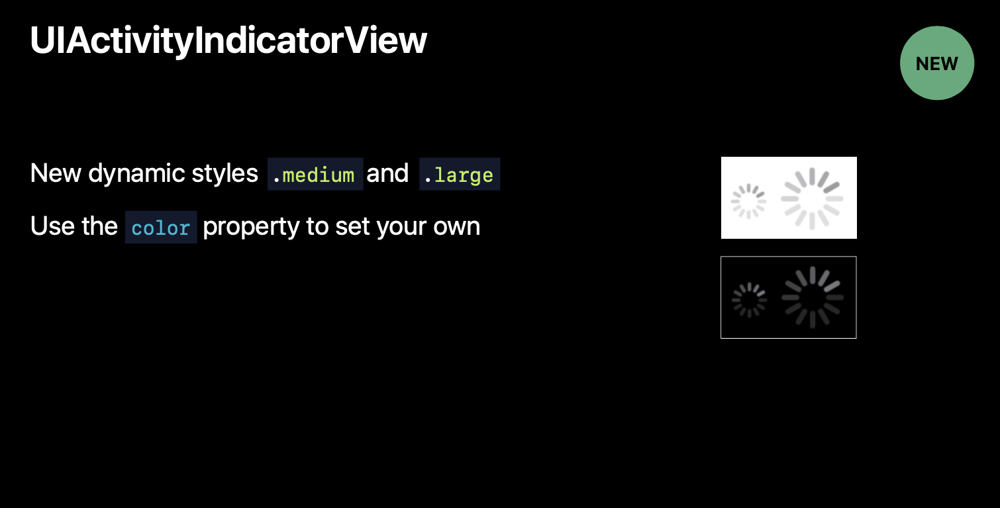
在绘制文本时，如果你是使用了「UILabel」、「UITextField」、「UITextView」，你只需要设置其中的文本颜色为「label color」就可以良好地适配不同外观。但如果你使用了属性字符串，那需要特别指定一个前景颜色。
let attributes: [NSAttributedString.Key: Any] = [
.font: UIFont.systemFont(ofSize: 36.0)
.foregroundColor: UIColor.label
]
对于 app 中出现的 web 内容，同样可以适配不同外观模式。
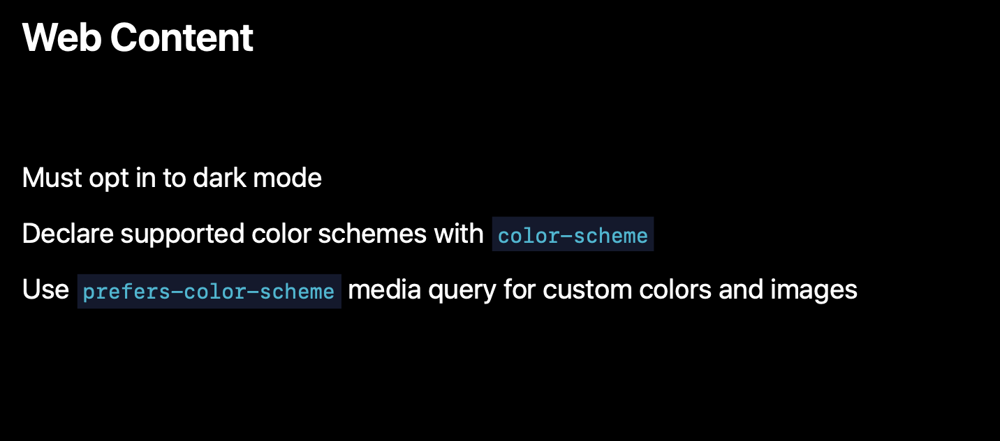
对于 tvOS 适配深色模式和将适配了深色模式的 iPad app 带到 Mac 上去：

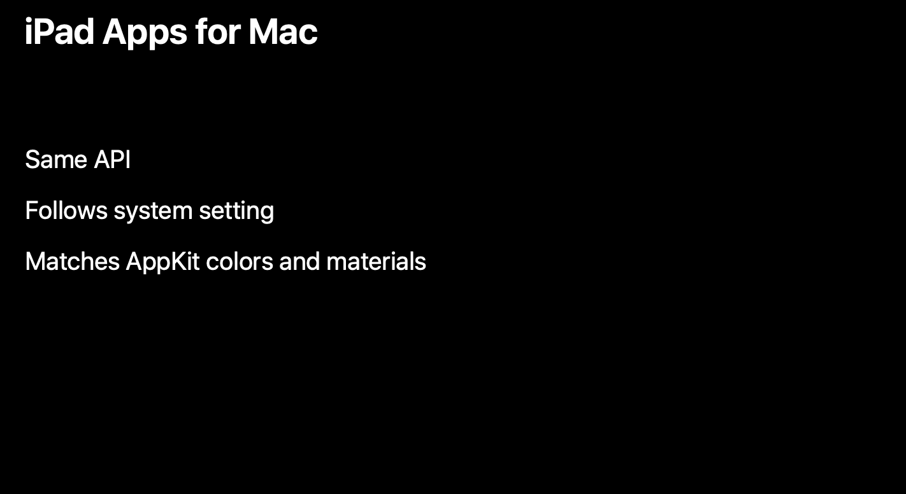
在 macOS 上实现 Dark Mode
待补充...
参考链接
- Dark Mode - Visual Design - iOS - Human Interface Guidelines - Apple Developer
- Color - Visual Design - iOS - Human Interface Guidelines - Apple Developer
- Materials - Visual Design - iOS - Human Interface Guidelines - Apple Developer
- SF Symbols - SF Symbols - Human Interface Guidelines - Apple Developer
- Typography - Visual Design - iOS - Human Interface Guidelines - Apple Developer
- Color and Contrast - Accessibility - Human Interface Guidelines - Apple Developer
- Implementing Dark Mode on iOS - WWDC 2019 - Videos - Apple Developer
- Adopting iOS Dark Mode | Apple Developer Documentation
- Supporting Dark Mode in Your Interface | Apple Developer Documentation
如果你觉得这篇文章对你有所帮助，欢迎请我喝杯咖啡，感谢你的支持😁